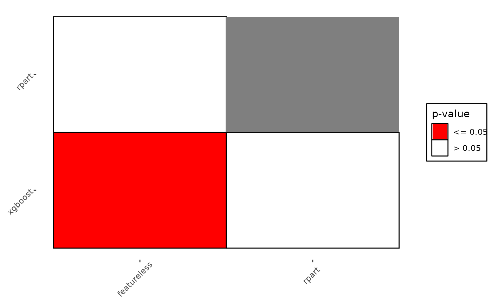

Generates plots for BenchmarkAggr, all assume that there are multiple, independent, tasks.
Choices depending on the argument type:
"mean"(default): Assumes there are at least two independent tasks. Plots the sample mean of the measure for all learners with error bars computed with the standard error of the mean."box": Boxplots for each learner calculated over all tasks for a given measure."fn": Plots post-hoc Friedman-Nemenyi by first calling BenchmarkAggr$friedman_posthocand plotting significant pairs in coloured squares and leaving non-significant pairs blank, useful for simply visualising pair-wise comparisons."cd": Critical difference plots (Demsar, 2006). Learners are drawn on the x-axis according to their average rank with the best performing on the left and decreasing performance going right. Any learners not connected by a horizontal bar are significantly different in performance. Critical differences are calculated as: $$CD = q_{\alpha} \sqrt{\left(\frac{k(k+1)}{6N}\right)}$$ Where \(q_\alpha\) is based on the studentized range statistic. See references for further details. It's recommended to crop white space using external tools, or functionimage_trim()from package magick.
Arguments
- object
(BenchmarkAggr)
The benchmark aggregation object.- type
(character(1))
Type of plot, see description.- meas
(character(1))
Measure to plot, should be inobj$measures, can beNULLif only one measure is inobj.- level
(numeric(1))
Confidence level for error bars fortype = "mean"- p.value
(numeric(1))
What value should be considered significant fortype = "cd"andtype = "fn".- minimize
(logical(1))
Fortype = "cd", indicates if the measure is optimally minimized. Default isTRUE.- test
(
character(1)))
Fortype = "cd", critical differences are either computed between all learners (test = "nemenyi"), or to a baseline (test = "bd"). Bonferroni-Dunn usually yields higher power than Nemenyi as it only compares algorithms to one baseline. Default is"nemenyi".- baseline
(character(1))
Fortype = "cd"andtest = "bd"a baseline learner to compare the other learners to, should be in$learners, ifNULLthen differences are compared to the best performing learner.- style
(integer(1))
Fortype = "cd"two ggplot styles are shipped with the package (style = 1orstyle = 2), otherwise the data can be accessed via the returned ggplot.- ratio
(
numeric(1))
Fortype = "cd"andstyle = 1, passed toggplot2::coord_fixed(), useful for quickly specifying the aspect ratio of the plot, best used withggsave().- col
(
character(1))
Fortype = "fn", specifies color to fill significant tiles, default is"red".- friedman_global
(
logical(1))
Should a friedman global test be performed fortype = "cd"andtype = "fn"? IfFALSE, a warning is issued in case the corresponding friedman posthoc test fails instead of an error. Default isTRUE(raises an error if global test fails).- ...
ANY
Additional arguments, currently unused.
References
Demšar J (2006). “Statistical Comparisons of Classifiers over Multiple Data Sets.” Journal of Machine Learning Research, 7(1), 1-30. https://jmlr.org/papers/v7/demsar06a.html.
Examples
if (requireNamespaces(c("mlr3learners", "mlr3", "rpart", "xgboost"))) {
library(mlr3)
library(mlr3learners)
library(ggplot2)
set.seed(1)
task = tsks(c("iris", "sonar", "wine", "zoo"))
learns = lrns(c("classif.featureless", "classif.rpart", "classif.xgboost"))
bm = benchmark(benchmark_grid(task, learns, rsmp("cv", folds = 3)))
obj = as.BenchmarkAggr(bm)
# mean and error bars
autoplot(obj, type = "mean", level = 0.95)
if (requireNamespace("PMCMRplus", quietly = TRUE)) {
# critical differences
autoplot(obj, type = "cd",style = 1)
autoplot(obj, type = "cd",style = 2)
# post-hoc friedman-nemenyi
autoplot(obj, type = "fn")
}
}
